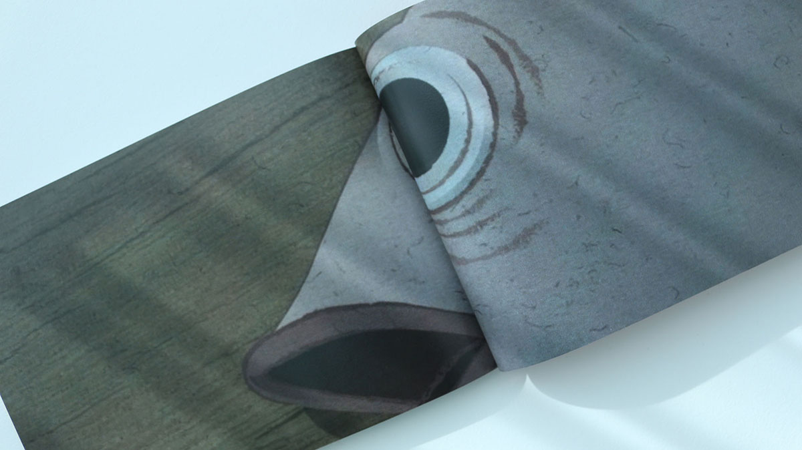
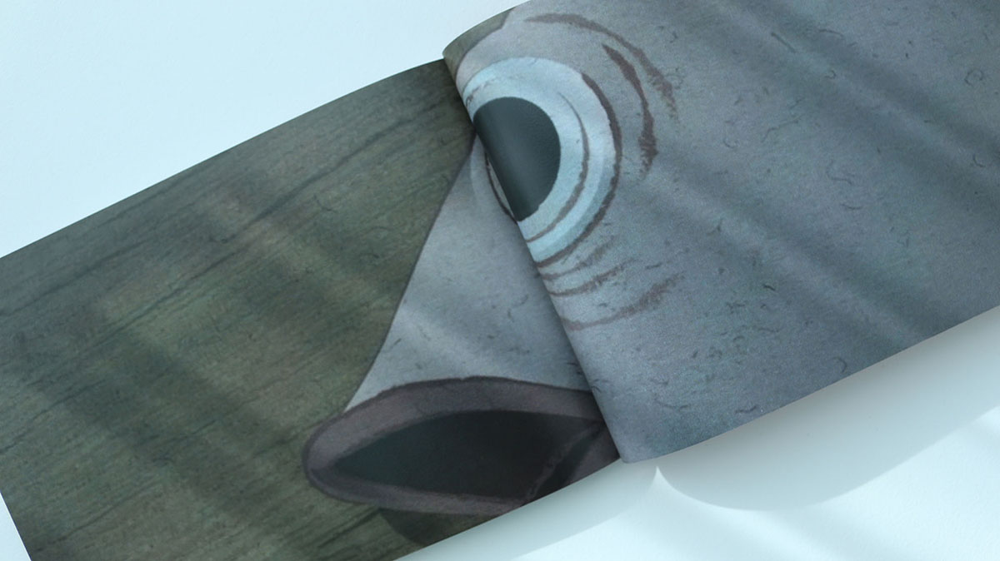

In 2016, South Korea experienced a political scandal known as the “Choi Soon-sil Gate,” which shed light on the lack of fairness and integrity in the country’s political and social structures. This project draws parallels between the ‘Chosun Film’ created during the Japanese colonial period and the current situation revealed by the political scandal in Korea.
‘Chosun Film’ indicates the films produced in Korea during the early 1900s when film industry first came out in the country. It was under Japanese control and censorship while citizens who unware that the films were meticulously crafted by Japan for internal subversion, enthusiastically embraced cinema as a entertainment. This project, inspired by ‘Chosun Films’, provides a reflective perspective on how our society has evolved over a century.
The visuals in this project are based on historical records. They are reconstructed as motion graphics, with each frame output at 12 frames per second. The ‘rubbing+scanning’ process used to recreate these images serves as a methodological representation of how individuals were influenced by an external force. A publication containing organised researches was displayed next to the video during the exhibition.
2016년 한국은 국정농단사태를 겪으며 현재 한국의 정치와 사회 구조가 얼마나 공정하고 청렴한 질서를 갖추지 못했는가를 알게 되었습니다. 이 프로젝트는 일제 강점기라는 암울한 시기의 ‘조선 영화’의 특징에 빗대어 국정 농단 사태가 보여준 현재의 모습을 보여줍니다.
‘조선 영화’란 한국에 처음 영화가 들어왔을 때의 그것을 가리키는 말로, 일제라는 외부 권력에 의해 통제되고 검열되었던 1900년대 조선에서 제작된 영화를 뜻합니다. 시민들은 영화라는 신문물에 열광하였지만 그 안의 내용들이 일본에 의해 내선융화목적을 갖고 치밀하게 제작된 결과물이라는 것은 알 수 없었습니다. 이러한 조선 영화를 모티브로한 이 프로젝트는 100년이 넘은 지금, 우리 사회는 얼마나 발전했는가에 대한 자조적인 시각을 보여줍니다.
영상의 소재들은 당시 기록들을 모티브로 하고 있습니다. 제작된 모션 그래픽 영상을 1초당 12프레임으로 출력하여 스캐너에 비비는 과정을 통해 재탄생한 결과물은 거스를 수 없는 절대적인 힘에 의해 좌지우지되는 모습을 방법론적으로 표현합니다. 당시 자료들을 조사하여 정리한 책은 영상과 함께 전시장에 비치되었습니다.


 
